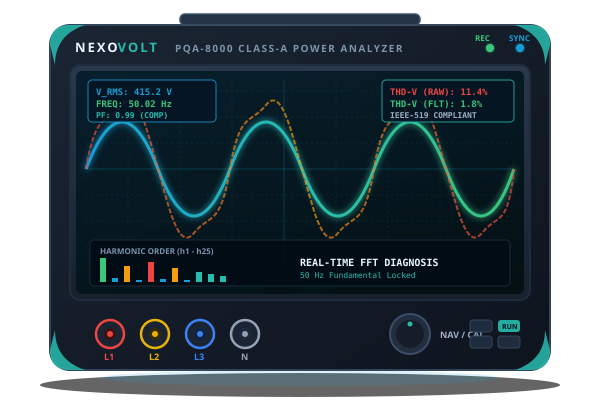

ASSESSMENT PREPARATION
Bring the context, not an assumed outcome.
A calculator cannot replace a site study, engineering diagnosis or verified savings analysis. These details help make the first conversation more useful.
USEFUL INFORMATION
What to prepare before speaking with an engineer.
Not every item is required. Share what is available and identify where the information is incomplete.

- Electrical symptoms and when they occur
- Facility type, operating shifts and recent changes
- Affected equipment, load details and one-line diagrams
- Utility bills, penalties or prior reports where relevant
- Available measurements, instrument records or panel photos
CLAIMS & SAVINGS
Publish only what can be measured and approved.
Savings, payback, compliance and performance outcomes require a defined baseline, calculation or measurement method, stated assumptions and Nexovolt approval before publication.